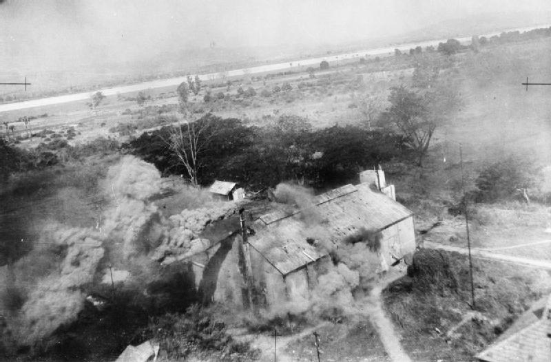

第 11 章
曼德勒：计划沦为废纸
四月二十一日下午，眉苗那座殖民时期别墅的柚木长桌上摊开着缅甸中部的作战地图。四角用茶杯和烟灰缸压着，从窗口灌进来的热风把纸边吹得微微卷起。史迪威手持铅笔，在图上的伊洛瓦底江弯曲处画

仁安羌油田设施旧照
图源：维基共享资源 · Royal Air Force official photographer · Public domain
了一道弧线——从曼德勒以南的东敦枝一带起，向东延伸到掸邦高原边缘的棠吉附近。
这道弧线代表着他对于缅甸战局的最后构想：集中第五军主力、第六军尚能作战的部队、新三十八师以及英印军中仍可一战的单位，在曼德勒以南组织一道弧形防线，阻敌于伊洛瓦底江，守住缅甸北部，保住滇缅公路的最后生命线。铅笔划过图纸的声音很轻。在场的中国参谋军官们没有人说话。
他们知道这条弧线意味着什么——十余万中国士兵将被置于一个以曼德勒为轴心的防御体系中，而这个体系能否运转，取决于英国人是否愿意留下来一起打。取决于那些在仁安羌被中国士兵用生命救出来的英印部队，是否愿意转过身去，与中国军队并肩守住这道防线。
同一天上午，亚历山大在距离眉苗不到一百公里的英军司令部里签署了一份内容完全不同的文件：英印军撤退至印度边境的路线勘定方案。这份方案将英缅第一师、英印第十七师和第七装甲旅残部的撤退序列、途经补给点和最终集结地域标注得清清楚楚，精确到每一个营的出发时间和经由道路。在亚历山大的作战地图上，曼德勒不是防御核心，而是撤退路线上的一个地理参照点——部队经过它，继续向西，渡过伊洛瓦底江，再渡过钦敦江，进入印度。
两份地图，两个方向，在同一片土地上同时存在。这就是曼德勒会战在诞生时刻的真实处境。
它从未真正作为一个被各方接受的共同计划存在过。它在史迪威的坚持下被反复修订、在重庆与伦敦之间的电报往来中被讨论、在眉苗的军事会议上被提上议程，但它从未进入部队部署阶段。
它是一份在纸面上不断生长、在现实中不断被掏空的文件。到四月最后一周，当日军多路向曼德勒扑来时，这份计划已经沦为废纸——不是被敌人击败的，而是被盟军自身的离心力撕碎的。
要理解这场流产，必须回到四月下旬盟军在缅甸中部的实际兵力态势。彼时中国远征军第五军主力——戴安澜的第二〇〇师、廖耀湘的新二十二师和余韶的第九十六师——正在彬文那至曼德勒之间机动。第六军的暂五十五师和第四十九师在东部掸邦高原与日军第五十六师团缠斗，战线已经出现裂痕。新三十八师刚刚完成仁安羌解围战，正在伊洛瓦底江西岸执行掩护英军撤退的任务，弹药即将耗尽。
英印军方面，斯利姆的缅甸军下辖英缅第一师、英印第十七师和第七装甲旅残部，名义上仍有战斗力，但各部指挥官接到的命令已经不是“守住阵地”，而是“准备向西北转进”。再加上配属的炮兵、工兵和后勤单位，盟军在缅甸中部的总兵力纸面上超过十万。
十万军队。如果统一指挥、集中使用，确实可以在曼德勒以南打一场有规模的会战。日军虽然势头正盛，但其在缅甸的兵力投送同样面临补给线拉长和兵力分散的困境。
第十五军司令官饭田祥二郎的四个师团——第三十三师团沿伊洛瓦底江西岸推进、第五十五师团在中路、第十八师团在东路、第五十六师团远在掸邦——彼此之间的间隙正在扩大。如果盟军能在曼德勒以南集中力量打击其中一路，战局未必没有转机。这正是史迪威坚持会战计划的军事逻辑所在。
但这个逻辑需要一个前提：盟军内部的目标必须一致。而四月下旬的缅甸战场上，三个国家、四支军队的目标不仅不一致，而且正在朝着完全相反的方向加速分离。
英方的立场最为明确，也最不可动摇。亚历山大在四月中旬就已经做出判断：缅甸的丢失只是时间问题，英军的首要任务是保全印度。这个判断不是亚历山大的个人意见，而是帝国总参谋部在全球战略格局下做出的优先级排序。
在伦敦的战争地图上，缅甸是远东战场的一个侧翼；印度是大英帝国在东方的基石。两者之间不存在权衡余地。
因此亚历山大在四月二十一日签署的撤退勘定方案，并不是在曼德勒会战计划失败之后的应对措施——它在时间上先于曼德勒会战计划的最后一次修订。
当史迪威还在试图说服各方接受会战方案时，英军主力撤退的车轮已经开始转动。
仁安羌解围战发生在这个时间节点上，其意义便呈现出残酷的双重性。从战术层面看，孙立人指挥新三十八师一一三团以不足千人的兵力解救七千余名英军及平民，是一次出色的战斗。但从战略层面看，这场胜利恰好发生在英军已经决定全面撤退的时刻。亚历山大在感谢中国军队“英勇救援”的电报发出时，英缅第一师的部队已经开始按照撤退方案向西北移动。中国士兵用生命换来的战术胜利，在战略上被提前注销了价值——他们解救的部队本来就要撤退，他们夺回的阵地本来就不会被坚守。
这不是英方的欺骗或背信弃义。在亚历山大的认知框架里，撤退是既定的战略决策，仁安羌解围只是这个决策执行过程中的一个意外插曲。
问题在于，这个决策从未被及时、完整地告知中方。当新三十八师的士兵们在仁安羌的烈日下冲锋时，他们以为自己在为一场共同的事业而战；他们不知道，这场事业在英方的日程表上已经被划掉了。
信息不对称的结构性后果在四月最后一周集中爆发。当史迪威在眉苗召集军事会议、力主集中兵力组织曼德勒会战时，他发现中国指挥官们提出的问题越来越尖锐。杜聿明质疑英军是否会履行协同作战的承诺——他的第五军是远征军主力，如果投入曼德勒会战而英军先行撤退，第五军的侧翼将完全暴露。林蔚作为军事委员会驻滇缅参谋团团长，更关心的是腊戍的安全——那是滇缅公路在缅甸境内的枢纽，远征军后方补给的总仓库所在地。一旦腊戍失守，不仅滇缅公路被切断，第五军和第六军赖以继续作战的弹药、油料和粮食也将断绝。
罗卓英作为远征军第一路司令长官，夹在史迪威的攻势主张和杜聿明的谨慎立场之间，试图寻找一个各方都能接受的折中方案。
这些质疑并非无的放矢。四月二十三日，第六军在东部掸邦的防线被日军第五十六师团突破。暂五十五师在罗衣考一带与敌激战后被迫后撤，第四十九师在孟畔地区的阵地也岌岌可危。
第六军军长甘丽初向参谋团报告：部队伤亡惨重，弹药补给困难，如果不能得到增援或准许后撤，防线将在数日内崩溃。这份报告在眉苗引起震动——因为它意味着腊戍的门户正在洞开。
日军第五十六师团的推进速度超出了远征军参谋团的预期。他们原本判断日军在掸邦高原的山地地形中难以实施快速机动，但日军工兵部队在推进过程中迅速修复了被破坏的桥梁和路段，使得以装甲车和卡车搭载步兵组成的快速纵队能够以超乎预估的速度向北猛插。
腊戍的威胁改变了曼德勒会战计划的全部前提。史迪威的构想是集中力量在南线阻敌，但东线的崩溃意味着日军可能从侧后包抄曼德勒——到那时，集中在曼德勒以南的远征军主力将陷入南北夹击。
杜聿明在四月二十四日的会议上明确表示：第五军不能在一个侧翼已经暴露、后方可能被切断的位置上组织会战。他主张主力北移，先确保腊戍安全，再图后计。这个主张从军事常识看无可厚非——任何指挥官都不会把主力投入到一个可能被合围的区域。
但它的另一面是：曼德勒会战计划的核心——集中兵力——已经不可能实现。如果第五军主力北移去保腊戍，曼德勒以南就只剩下新二十二师和第九十六师的部分兵力，加上一支正在撤退的英军。这样的兵力配置无法构成史迪威所设想的那道弧形防线。
新三十八师还在伊洛瓦底江西岸执行掩护任务。孙立人的部队在仁安羌解围战之后没有得到休整，弹药也没有得到充分补充。他们接到的命令是掩护英军撤退至某一指定位置后归建。但这个“指定位置”随着英军撤退速度的加快而不断西移。英缅第一师和英印第十七师的部队急于脱离与日军的接触，撤退速度超出了中方联络官此前的通报。新三十八师被迫在陌生地域且战且退，与日军追兵保持接触，同时与第五军主力之间的距离越来越远。到四月二十五日，该师与主力之间的联络通道已经变得脆弱——无线电通讯时断时续，传令兵需要穿越日军渗透的区域才能传递命令。
这就是四月最后一周的真实图景。史迪威还在眉苗的别墅里修改会战计划；亚历山大已经在安排英军渡过钦敦江的船只；
杜聿明在评估第五军北移的路线和时间；甘丽初在请求放弃东线阵地以保存残部；孙立人在伊洛瓦底江西岸且战且退，弹药越来越少；而林蔚在反复计算腊戍还能守几天。六个人，六个方向，六种对局势的判断和应对方案。曼德勒会战计划就悬在这六种力量之间——没有人公开否定它，但也没有人真正按照它的要求部署部队。
四月二十六日，局势进一步恶化。第六军在东部战线的抵抗彻底瓦解。日军第五十六师团的快速纵队沿毛奇—罗衣考—棠吉公路向北猛插，当天傍晚前锋已逼近棠吉。棠吉是腊戍以南的最后一道屏障。如果棠吉失守，腊戍将直接暴露在日军兵锋之下。
杜聿明紧急命令戴安澜率第二〇〇师主力驰援棠吉。这是一个艰难的决定——第二〇〇师是第五军的王牌部队，调它去东线意味着曼德勒方向的兵力进一步削弱。但杜聿明别无选择：腊戍如果丢了，整个远征军的退路就被切断。四月二十七日，戴安澜率部抵达棠吉外围，与日军展开激战。
第二〇〇师的士兵们在缅甸的烈日下徒步急行军数十公里后立即投入战斗，一度夺回棠吉城区并击毁日军装甲车数辆。但日军后续部队源源不断涌来，第二〇〇师在缺乏炮火支援和空中掩护的情况下独力支撑，伤亡急剧增加。戴安澜向杜聿明报告：棠吉可以守，但需要增援和补给。
然而此时的第五军已经被分割在两个方向上——廖耀湘的新二十二师和余韶的第九十六师仍留在曼德勒以南，戴安澜的第二〇〇师在东线苦战，中间隔着上百公里的距离和日军渗透部队的活动区域。杜聿明手中已经没有可以调动的预备队。
他向罗卓英请求从曼德勒方向抽调兵力增援棠吉，但罗卓英担心削弱曼德勒方向的防御会导致南线崩溃。两个方向的危机同时挤压，而资源只够应对其中一个。就在第二〇〇师在棠吉血战的同一天，英军主力已经开始渡过钦敦江。斯利姆后来在回忆录中描述过这次撤退：数千名印度难民夹杂在行军队列中，拖慢了部队的行进速度；日军的追击部队不断骚扰后卫；雨季将至，道路开始变得泥泞，车辆经常陷入泥沼。
但撤退本身是有序的——各师按照预定序列、经由预定路线、向预定目的地移动。这与中方部队当时所处的混乱状态形成鲜明对照。英军有明确的目的地和路线；中国军队没有。
四月二十八日，棠吉再度失守。第二〇〇师在付出重大伤亡后被迫撤出城区，向西北方向转移。同一天，腊戍遭到日军空袭，火车站和仓库区被炸毁多处。后勤补给系统开始崩溃——储存在腊戍的部分弹药和油料被紧急转移，但在混乱中大量物资散落或被遗弃。远征军的弹药供应原本就依赖滇缅公路从国内运来，腊戍是这条补给线上的枢纽。枢纽一旦瘫痪，补给便告断绝。到了这个时候，曼德勒会战计划已经没有任何实施的可能了。
史迪威在四月二十九日的日记中写道：“一切都结束了。英国人只想撤往印度，中国人被分割在各处，没有统一的指挥，没有足够的补给，没有明确的计划。”这段话没有提到他自己——他没有写自己在过去一周里多次试图说服各方接受会战方案而未能成功，也没有写他在眉苗那座别墅里对着地图反复修改一条已经不可能执行的防线。
但他的参谋人员后来回忆，那天晚上，史迪威把铅笔扔在了地图上，走出了房间。四月三十日，罗卓英在眉苗召集最后一次军事会议。参加者包括杜聿明、林蔚、甘丽初以及英方联络官。会议桌上摊着那张标注了曼德勒会战计划的地图，但没有人再去看它。讨论的议题已经不是如何组织会战，而是各部队如何撤退。
杜聿明主张第五军主力向北经密支那退回国内。他的理由是：远征军的兵员补充和后勤供应都依赖国内，退往印度则与国内断绝联系，部队将完全仰赖英美的供给和指挥——这是把中国军队的命运交到别人手里。林蔚认为应该先确保腊戍方向的安全，掩护滇缅公路畅通；如果腊戍不保，至少要为撤退中的部队争取时间。罗卓英倾向于采纳史迪威的建议——部分部队随英军撤往印度，以便接受美械装备整训后再图反攻。
他的理由是：如果全部退回国内，远征军在缅甸付出的牺牲将毫无收获；只有保留一支有生力量在印度接受整训，才能为将来的反攻保留火种。三种意见各有道理，但无法统一。
杜聿明的顾虑不是没有根据——把部队交给外国人指挥和供应，意味着中国对这些部队的主权将在操作层面被进一步悬置。林蔚的担忧同样现实——腊戍如果失守太快，撤退中的部队将被日军截断退路。罗卓英的设想也有其合理性——后来的历史证明，退往印度的部队确实在兰姆伽接受了整训并成为反攻缅甸的主力。
但在四月三十日那个闷热的下午，这三种意见无法融合成一个共同的决定。会议最终没有做出明确的决议，只是同意各部队“根据实际情况自行处置”。这四个字——“自行处置”——是曼德勒会战计划的墓志铭。它意味着盟军在缅甸战场上的统一指挥已经不复存在。十余万军队将各自面对各自的命运。
五月一日，日军进入曼德勒。这座城市几乎没有发生战斗——它的保卫者已经先行离去。英印军部队早在数日前就已向西渡过伊洛瓦底江，向钦敦江方向撤退；中国远征军的各师分散在曼德勒南北的广阔区域内，彼此失去联络，各自向不同的方向移动。日军占领的是一座空城。
但这座空城的陷落标志着一个事实：盟军在缅甸中部战场上的组织核心已经溃散。曼德勒不是一座城的丢失。一座城丢了可以再夺回来——后来驻印军确实从印度反攻出来，重新打回了曼德勒。
但1942年5月1日丢失的，不是一座城，而是一个战场组织核。十余万军队失去了统一的指挥中枢、共同的后勤基础和一致的作战目标，被抛入一个各自为战的状态中。从军事史的角度看，曼德勒会战的流产是一个经典案例：一个纸面上兵力尚可、足以一战的计划，如何在多方离心力的共同作用下化为乌有。离心力的来源是多重的。
英军的战略优先级与中方不同——这是第一重。中方内部对撤退方向的分歧——这是第二重。东线第六军的过早崩溃打乱了兵力部署的时间表——这是第三重。后勤系统在腊戍遭袭后迅速瘫痪，使任何有组织的作战都失去了物质基础——这是第四重。这四重力量不是依次作用，而是在四月最后十天里同时发力、相互激荡，最终将曼德勒会战计划撕得粉碎。但在这个军事史案例的背后，还有一个更深层的结构性问题。
曼德勒会战的流产，是“主权悬置”在战场组织层面的具体化。“主权悬置”——中国在盟军体系中获得仪式性主权承认，但在军事指挥、后勤分配、战后安排等操作性层面，主权被系统性地搁置和绕过——这个概念在曼德勒得到了最直接的体现。中国远征军的作战目标是什么？是保卫缅甸以维系滇缅公路，还是掩护英军撤退以保全印度？
这两个目标在理论上可以兼容，在实践中却互相冲突。当冲突发生时，谁有权决定优先顺序？史迪威作为中国战区参谋长，理论上拥有对中国远征军的指挥权，但他无法命令英军留下来协同作战。
亚历山大作为英缅军总司令，可以决定英军的行动方向，但他的决定不需要经过中方的同意——他甚至不需要及时通报中方。蒋介石作为中国最高统帅，可以给远征军下达指令，但他的指令需要经过史迪威这个美国联络官才能传达和执行——而史迪威与蒋介石之间的互信在仰光失陷前后已经严重受损。在这个多层指挥体系里，中国远征军的作战目标既不由中方单独决定，也不由盟军方面明确保证。
它在英军的战略需求、美军的战场判断和中方的自身考量之间漂浮不定。曼德勒会战计划就是这种漂浮状态的产物：它被提出、被讨论、被修订，但从未被作为一个各方共同承担义务的方案来执行。当英军单方面决定撤退时，这个计划的基石就被抽走了；当中方内部因为撤退方向产生分歧时，这个计划的框架就散了；
当东线崩溃和后勤瘫痪接踵而至时，连讨论这个计划的场合都不存在了。这就是“主权悬置”的代价。一支军队被投入战场，它的牺牲和努力却无法转化为战略上的主动权和决策权。仁安羌的胜利是这样——它没能让英军改变撤退的决心。曼德勒的流产也是这样——十余万军队的存在没能让盟军形成一个统一的作战方案。
中国以人力换取国际地位的战略交易，在这个时刻暴露出了它最残酷的一面：人力已经付出去了，国际地位却还悬在半空。有人会说，远征军的牺牲是必要的入场费——兰姆伽整训和后来的反攻证明了这一点。如果没有1942年春天的惨痛失败，就不会有后来装备精良、训练有素的驻印军；
如果没有曼德勒的溃败，就不会有在印度土地上建立起的那支现代化军队。这个说法不是全无道理。历史确实证明了，退往印度的部队在后来的整训中获益良多，成为缅甸反攻的主力。
但这个说法的盲点在于：它把体系的缺陷转化成了个体的必然代价。曼德勒会战的流产不是因为中国士兵不能打——仁安羌证明了他们能打，棠吉证明了他们能打。它也不是因为中国指挥官缺乏战略眼光——杜聿明对侧翼暴露的担忧被后续事实证明完全正确。它是因为指挥体系的多重叠加导致作战目标无法统一，是因为后勤系统从一开始就依赖一条脆弱的公路和一个随时可能被切断的枢纽，是因为“主权悬置”使得中国军队的作战目标可以被盟军的战略优先级随时覆盖。
这些结构性问题不会因为在兰姆伽换装了美械装备就自动消失。它们会在后来的战事中以不同的形式反复出现——在反攻缅甸时的指挥权争议中，在战后遣返时的身份认定中，在那些滞留印缅多年不得归乡的老兵们的命运中。“归途无岸”不是一句修辞。
它是一种结构性的处境——当一支军队的作战目标、指挥权力和后勤生命线都不在自己手中时，它的士兵们无论走多远、打多少胜仗，都找不到一条确定的归途。五月一日之后，缅甸战场上的盟军不再是一个整体。英军沿着勘定好的路线向印度撤退，辎重和伤员走在前面，后卫部队且战且退。
中国远征军则分裂为两个大的流向：第五军主力按照杜聿明的决心向北移动，目标是密支那，然后经野人山回国；新三十八师因为掩护英军撤退而滞留在伊洛瓦底江西岸，与主力之间的联系已经断绝，只能自行决定去向。第六军残部在东部山区溃散，一部分分散退入滇西，一部分消失在掸邦的丛林中。十余万军队散落在缅北的广阔地域里。
彼此之间失去了联络通道——无线电设备要么损坏要么电池耗尽，传令兵要么迷失方向要么遭遇日军巡逻队，各部队对友军的位置和状况一无所知。统一的指挥核心不复存在——罗卓英的司令部在撤退中不断移动位置，命令发出后往往石沉大海；杜聿明能直接掌握的只有第五军直属部队和部分师级单位；
孙立人与上级的联系时断时续，更多时候只能依靠自己的判断行事。共同的后勤基础已经崩溃——腊戍失守后滇缅公路被切断，来自国内的弹药和粮食补给彻底断绝；
各部队携带的给养有限，就地征发又受到语言不通和当地物资匮乏的限制。通往密林和边境的败退之路已经无可避免地铺开了。这条路通向哪里，当时没有人知道。有人将走进野人山的雨季泥泞；有人将渡过钦敦江进入印度；有人将滞留在缅北的山林中从此杳无音信。
但有一点是确定的：从曼德勒失陷的那一刻起，“归途”这个词对于远征军士兵而言已经不再是一条明确的道路，而是一个悬在半空中的问题。五月二日清晨，曼德勒城内的日军太阳旗在热风中展开。城市南郊的火车站里，最后一列向北开出的火车已经在数小时前离去，铁轨上空空荡荡。
伊洛瓦底江的水流声盖过了远处的零星枪声。被遗弃的军用卡车和装甲车残骸散落在街道上，有些还在冒烟。这座城市在沉默中接受了它的新占领者——不是经过激战后的陷落，而是在保卫者先行离去后的交割。
在城市的某个角落，一张标注着弧形防线的地图被遗留在撤空的指挥部里——四角还压着茶杯和烟灰缸——铅笔画出那道弧线已经模糊不清了；窗外热风卷起纸边遮住了它的一部分；地图上那些代表部队番号标记——第五军、第六军、新三十八师、英缅第一师——已经不再指向任何真实的部队部署了；它们只是纸上的符号记录着一个从未被执行过的计划而已啊！
这张地图后来被日军缴获作为战利品送到了第十五军司令部去了呢！饭田祥二郎参谋军官们研究过这份地图后得出结论：盟军防御构想并非没有道理啊！如果得以实施的话日军进攻曼德勒代价将远高于实际付出代价呢！
但这个“如果”永远停留在纸面上罢了！曼德勒会战流产不是被日军击败而是被盟军自身离心力撕碎掉啦！而撕碎它的那些力量在五月二日之后并没有消失掉哦！它们将继续作用于散落在缅北十余万中国军队身上呢！
“归途无岸”这四个字在曼德勒失陷的那一刻还不是一个被说出的句子，但它所描述的那种处境已经从纸上的可能变成了脚下的现实。五月二日下午，最后一支撤出曼德勒北郊的中国部队——第五军的一个步兵团——在距离城市十五公里的一处高地上停下来休整。士兵们坐在路边的土坡上，打开所剩无几的干粮袋。
从高地望出去，曼德勒城的轮廓在午后的薄雾中隐约可见，伊洛瓦底江像一条灰色的带子绕城而过。有人回头看了一眼那座正在远去的城市。北面是密林覆盖的山脉。
那里没有路标，没有补给站，没有等待他们的防线和阵地。只有一条不知通向何方的土路在雨季来临前的闷热空气中向前延伸，消失在丛林深处。团部通讯兵最后一次尝试与师部建立无线电联系，耳机里只有沙沙的电流声。联络通道已经断了。
不是这一条——是所有。十余万军队散落在缅北的丛林与群山之间，每一支部队都在独自面对同一个问题：往哪里走？没有人能回答这个问题。因为能够回答这个问题的那个指挥体系、那个后勤网络、那个曾经让这些部队作为一个整体存在的组织核心，已经在曼德勒化为乌有。